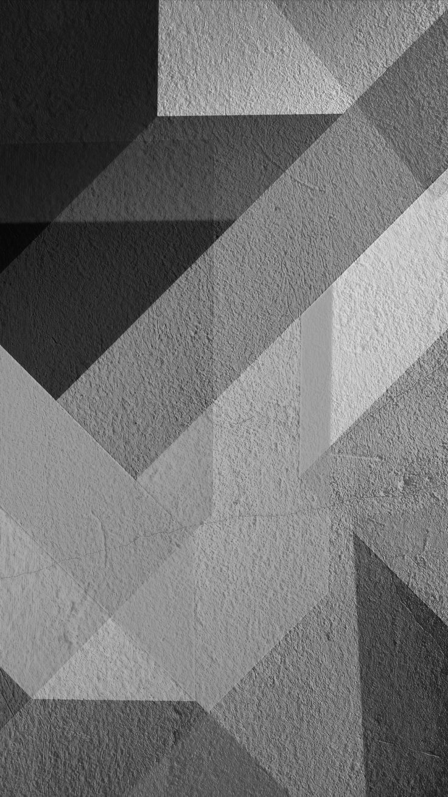

Task 2 – Black-and-White Filter
Objective
Convert the selected color photograph (images/originals/image 1.jpg)
into a black-and-white (grayscale-looking) RGB image that can be reused in later
tasks and inserted into the final report.
Methodology
I wrote task2program.py (Python 3, Pillow, NumPy) to read the source image,
ensure it is in RGB mode, and compute the arithmetic mean of the three color channels
for every pixel. The averaged value is then replicated back into the R, G, and B
channels so the output remains an RGB file while visually appearing in black and white.
The script also logs input/output dimensions for easy verification and stores the
result under images/processed/black_and_white.png.
Breaking that workflow down:
-
Step 0 – Decoding an image: from pixels to Python – Think of
image 1.jpgas a colorful spreadsheet: 736 columns and 1308 rows, totaling 962,688 cells. Python (via NumPy) loads it as an array with exactly that shape. Because every cell stores three color channels—Red, Green, and Blue—each “cell” is a tiny bundle of three numbers. JPEG files arrange these bundles row by row, from the top-left corner down to the bottom-right.Each pixel also has a unique home address described by its column (x) and row (y) coordinate. For instance, the first pixel sits at (0, 0), while the last one is at (735, 1307). The table shows how four corner pixels translate into numeric data:
and color are paired:Position Pixel Address (x, y) RGB Value Hex (RRGGBB) Binary (R / G / B) Top-left (0, 0) [3, 23, 58] 0x03173A 00000011 / 00010111 / 00111010 Top-right (735, 0) [132, 63, 182] 0x843FB6 10000100 / 00111111 / 10110110 Bottom-left (0, 1307) [0, 85, 89] 0x005559 00000000 / 01010101 / 01011001 Bottom-right (735, 1307) [8, 49, 79] 0x08314F 00001000 / 00110001 / 01001111 Notice how computers “see” colors as raw numbers, not descriptive names. That’s where libraries help. JPEG is a compressed binary format; trying to decode it yourself would mean writing thousands of lines of math-heavy code. Pillow (PIL) acts as the translator: it reads the binary stream, decompresses it, and hands Python a clean array of RGB numbers. Once PIL has done that heavy lifting, we can freely manipulate the pixels—such as averaging R, G, and B to produce the black-and-white image in the next steps.
When we later average the channels, we collapse those three pieces of information into a single brightness value per pixel while preserving each pixel’s address. -
Read the source image –
Image.open()loads the pixels from disk into memory so they can be manipulated programmatically.Sample RGB pixels: (0, 0) -> [3, 23, 58] (368, 654) -> [247, 112, 142] (735, 1307) -> [8, 49, 79] -
Normalize to RGB –
img.convert("RGB")guarantees every pixel has exactly three channels (Red, Green, Blue), which simplifies the math regardless of the original file format. -
Average the channels – each pixel’s triple
(R, G, B)is reduced to one brightness value via(R + G + B) / 3. That scalar is then copied back into the R, G, and B slots, producing a black-and-white version that still uses an RGB container.Sample averaged intensities: (0, 0) -> [28] (368, 654) -> [167] (735, 1307) -> [45] Sample replicated RGB grayscale pixels: (0, 0) -> [28, 28, 28] (368, 654) -> [167, 167, 167] (735, 1307) -> [45, 45, 45]
Mathematical Formula
For a pixel located at coordinates (x, y):
I(x, y) = (R(x, y) + G(x, y) + B(x, y)) / 3
and the grayscale intensity I is assigned to each color channel: Rout = Gout = Bout = I.
Results


task2program.py; tonal details preserved while color is removed.Console Evidence
Completion log:
Black-and-white conversion complete. Input : images/originals/image 1.jpg (736×1308) Output: images/processed/black_and_white.png (736×1308)
Visually, the conversion preserved the overall luminance contrast—bright regions remain bright, and shadow details are still discernible—making this version a solid baseline for the upcoming Gaussian, thresholding, and edge-detection experiments.